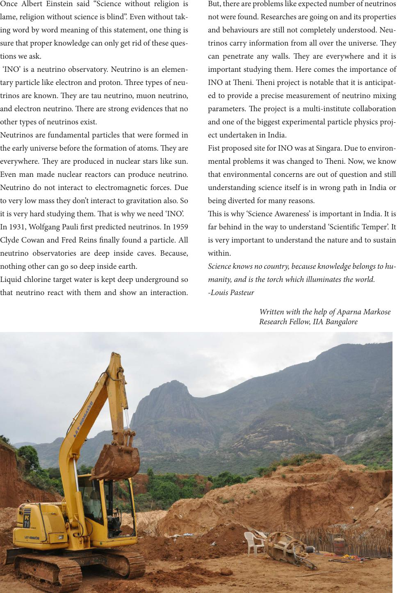

Once Albert Einstein said “Science without religion is
lame, religion without science is blind”. Even without tak-
ing word by word meaning of this statement, one thing is
sure that proper knowledge can only get rid of these ques-
tions we ask.
‘INO’ is a neutrino observatory. Neutrino is an elemen-
tary particle like electron and proton. ree types of neu-
trinos are known. ey are tau neutrino, muon neutrino,
and electron neutrino. ere are strong evidences that no
other types of neutrinos exist.
Neutrinos are fundamental particles that were formed in
the early universe before the formation of atoms. ey are
everywhere. ey are produced in nuclear stars like sun.
Even man made nuclear reactors can produce neutrino.
Neutrino do not interact to electromagnetic forces. Due
to very low mass they don’t interact to gravitation also. So
it is very hard studying them. at is why we need ‘INO’.
In 1931, Wolfgang Pauli rst predicted neutrinos. In 1959
Clyde Cowan and Fred Reins nally found a particle. All
neutrino observatories are deep inside caves. Because,
nothing other can go so deep inside earth.
Liquid chlorine target water is kept deep underground so
that neutrino react with them and show an interaction.
But, there are problems like expected number of neutrinos
not were found. Researches are going on and its properties
and behaviours are still not completely understood. Neu-
trinos carry information from all over the universe. ey
can penetrate any walls. ey are everywhere and it is
important studying them. Here comes the importance of
INO at eni. eni project is notable that it is anticipat-
ed to provide a precise measurement of neutrino mixing
parameters. e project is a multi-institute collaboration
and one of the biggest experimental particle physics proj-
ect undertaken in India.
Fist proposed site for INO was at Singara. Due to environ-
mental problems it was changed to eni. Now, we know
that environmental concerns are out of question and still
understanding science itself is in wrong path in India or
being diverted for many reasons.
is is why ‘Science Awareness’ is important in India. It is
far behind in the way to understand ‘Scientic Temper’. It
is very important to understand the nature and to sustain
within.
Science knows no country, because knowledge belongs to hu-
manity, and is the torch which illuminates the world.
-Louis Pasteur
Written with the help of Aparna Markose
Research Fellow, IIA Bangalore